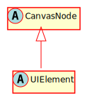

Hierarchy-Diagram
{kind=link}
Legend
 class
class
 abstract class
abstract class
 interface
interface
 public property
public property
 protected property
protected property
 private property
private property
 public method
public method
 protected method
protected method
 private method
private method
Hierarchy
- CanvasNode
- UIElement
Index
Constructors
Properties
- _ai
- _velocity
- active
- ai
Active - background
Color - border
Color - border
Radius - border
Width - collided
With Tilemap - collider
Offset - collision
Shape - emitter
- frozen
- group
- has
Physics - is
Clicked - is
Collidable - is
Colliding - is
Entered - is
Player - is
Static - is
Trigger - layer
- moving
- on
Ceiling - on
Click - on
Click Event Id - on
Enter - on
Enter Event Id - on
Ground - on
Leave - on
Leave Event Id - on
Release - on
Release Event Id - on
Wall - padding
- path
- pathfinding
- receiver
- rotation
- scene
- swept
Rect - trigger
Enters - trigger
Exits - trigger
Mask - tweens
- visible
Accessors
Methods
- addAI
- add
Physics - calculate
Background Color - calculate
Border Color - contains
- debug
Render - destroy
- disable
Physics - enable
Physics - finish
Move - freeze
- get
Last Velocity - get
Layer - get
Scene - in
Relative Coordinates - move
- move
On Path - position
Changed - remove
Physics - scale
Changed - setAIActive
- set
Background Color - set
Collision Shape - set
Group - set
Layer - set
Padding - set
Scene - set
Trigger - size
Changed - unfreeze
- update
- use
Custom Shader
Constructors
constructor
Properties
_ai
_velocity
A vector that allows velocity to be passed to the physics engine
active
Represnts whether this object has active physics or not.
ai
The activity status of the actor
background
The backgound color
border
The border color
border
The border radius
border
The border width
collided
A boolean representing whether or not the node just collided with the tilemap
collider
The offset of the collision shape from the center of the node
collision
The shape of the collider for this physics object.
Protected emitter
An event emitter.
frozen
Represent whether the object is frozen from moving or not.
group
The physics group this node belongs to
has
A flag for whether or not this object has initialized game physics.
Protected is
Whether or not this UIElement is currently clicked on
is
Represents whether this object is collidable (solid) or not.
is
Protected is
Whether or not this UIElement is currently hovered over
is
is
Represents whether this object can move or not.
is
Represnts whether this object is a trigger or not.
Protected layer
The visual layer this GameNode resides in.
moving
Represents whether the object is moving or not.
on
Reprsents whether the object is on the ceiling or not.
on
The reaction of this UIElement on a click
on
The event propagated on click
on
The reaction when a mouse enters this UIElement
on
The event propagated when a mouse enters this UIElement
on
Represents whether the object is on the ground or not.
on
The reaction when a mouse leaves this UIElement
on
The event propogated when a mouse leaves this UIElement
on
The reaction to the release of a click
on
The event propagated on the release of a click
on
Reprsents whether the object is on the wall or not.
padding
The padding
path
The path that navigation will follow
pathfinding
A flag representing whether or not the actor is currently pathfinding
Protected receiver
An event receiver.
rotation
A tweenable property for rotation. Does not affect the bounding box of this GameNode - Only rendering.
Protected scene
A reference to the scene this GameNode is a part of.
swept
The rectangle swept by the movement of this object, if dynamic
trigger
Events to trigger for collision enters.
trigger
Events to trigger for collision exits
trigger
The trigger mask for this node
tweens
A utility that allows the use of tweens on this GameNode
visible
A flag for whether or not the CanvasNode is visible
Accessors
ai
alpha
The opacity value of this GameNode
Returns number
The opacity value of this GameNode
Parameters
a: number
Returns void
boundary
The bounding box of this object.
Returns AABB
custom
Returns string
has
Returns boolean
id
The unique id of this object.
Returns number
The unique id of this object.
Parameters
id: number
Returns void
position
positionX
Parameters
value: number
Returns void
positionY
Parameters
value: number
Returns void
relative
The center of this object relative to the viewport.
Returns Vec2
scale
scaleX
Parameters
value: number
Returns void
scaleY
Parameters
value: number
Returns void
size
size
The size of the object taking into account the zoom and scale
Returns Vec2
Methods
addAI
add
Parameters
Optional collisionShape: Shape
The collider for this object. If this has a region (implements Region), it will be used when no collision shape is specified (or if collision shape is null).
Optional colliderOffset: Vec2
isCollidable: boolean = true
Whether this is collidable or not. True by default.
isStatic: boolean = false
Whether this is static or not. False by default
Returns void
calculate
Overridable method for calculating background color - useful for elements that want to be colored on different after certain events
Returns default
The background color of the UIElement
calculate
Overridable method for calculating border color - useful for elements that want to be colored on different after certain events
Returns default
The border color of the UIElement
contains
Returns true if the point (x, y) is inside of this canvas object
Parameters
x: number
The x position of the point
y: number
The y position of the point
Returns boolean
A flag representing whether or not this node contains the point.
debug
Renders the debugging information for this object.
Returns void
destroy
Returns void
disable
Prevents this object from participating in all collisions and triggers. It can still move.
Returns void
enable
Enables this object to participate in collisions and triggers. This is only necessary if disablePhysics was called
Returns void
finish
Returns void
freeze
Disables physics movement for this node
Returns void
get
If used before "move()", it will tell you the velocity of the node after its last movement
Returns Vec2
get
Returns the layer this object is on.
Returns default
This layer this object is on.
get
Gets the scene this object is in.
Returns default
The scene this object belongs to
in
move
Parameters
velocity: Vec2
The velocity with which to move the object.
Returns void
move
Moves this GameNode along a path
Parameters
speed: number
path: NavigationPath
Returns void
Protected position
Called if the position vector is modified or replaced
Returns void
remove
Removes this object from the physics system
Returns void
Protected scale
Called if the scale vector is changed or replaced
Returns void
setAIActive
Sets the AI to start/stop for this Actor.
Parameters
active: boolean
options: Record<string, any>
Returns void
set
Parameters
color: default
Returns void
set
Sets the collider for this GameNode
Parameters
collider: Shape
The new collider to use
Returns void
set
Parameters
group: string
The physics group this node should belong to
Returns void
set
Sets the layer of this object.
Parameters
layer: default
The layer this object will be on.
Returns void
set
Parameters
padding: Vec2
Returns void
set
Sets the scene for this object.
Parameters
scene: default
The scene this object belongs to.
Returns void
set
Sets this object to be a trigger for a specific group
Parameters
group: string
The name of the group that activates the trigger
onEnter: string
The name of the event to send when this trigger is activated
onExit: string
The name of the event to send when this trigger stops being activated
Returns void
Protected size
Called if the size vector is changed or replaced.
Returns void
unfreeze
Reenables physics movement for this node
Returns void
update
Updates this GameNode
Parameters
deltaT: number
Returns void
use
Adds a custom shader to this CanvasNode
Parameters
key: string
The registry key of the ShaderType
Returns void
The representation of a UIElement - the parent class of things like buttons